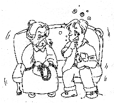

| Maître raconte des histoires drôles |
Le 3 octobre 1999, ( Initialement en chinois ) |
 Un homme vraiment très saoul se fraye un chemin dans un bus. Tant bien que mal, il réussi à trouver une place, mais dans sa maladresse en s'asseyant, il bouscule une vieille dame à côté de lui. La veille dame le regarde furieuse et dit : " Vous irez en enfer ! " L'homme s'exclame : " Oh, je suis monté dans le mauvais bus ! "